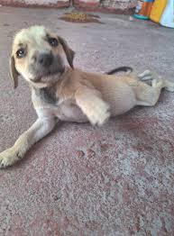
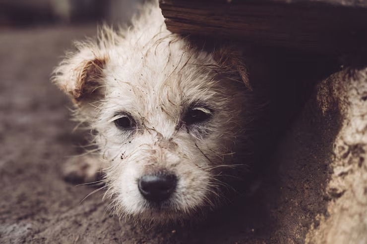
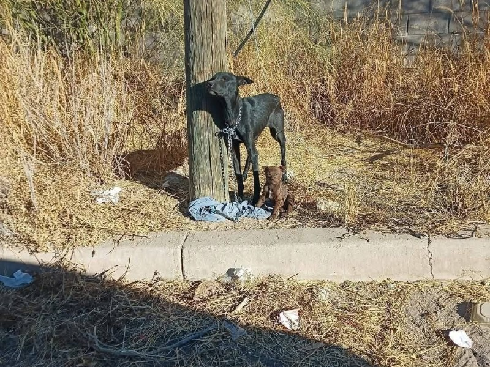
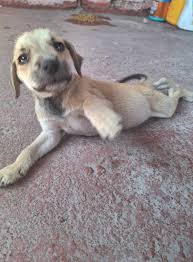
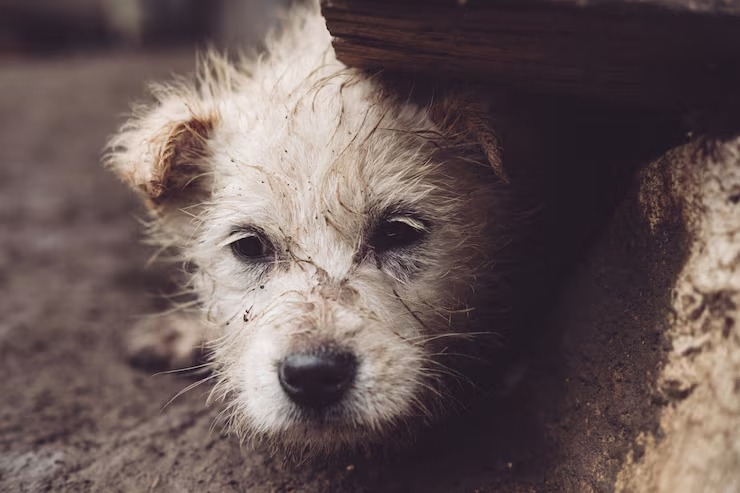
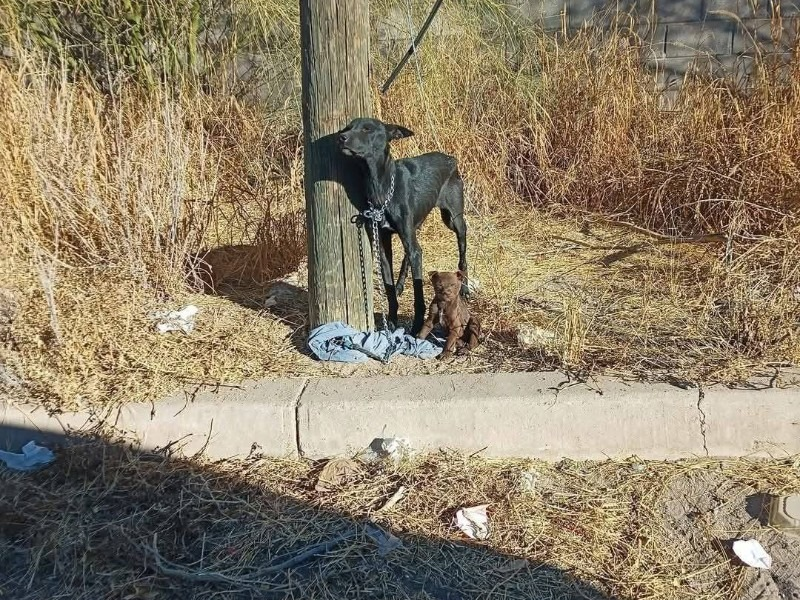

🐾 Adopta un Amigo 🐾
Ayuda a cambiar una vida, adopta y no compres
¿Por qué hablar del abandono animal?
El abandono animal es un problema que afecta a miles de perros y gatos cada año. Muchos terminan en las calles sin alimento, refugio ni cuidados. Esta página no es un sitio de adopciones oficiales, sino un espacio para informar, crear conciencia y promocionar la responsabilidad que implica tener un compañero peludo.
Causas más comunes del abandono
- Falta de educación sobre la responsabilidad de tener una mascota
- Problemas económicos que impiden su cuidado
- Crias no deseadas por falta de esterilización
- Malos comportamientos por falta de entrenamiento
- Personas que compran por impulso sin pensar en el futuro
- Animales enfermos que requieren atención veterinaria
¿Cómo puedo ayudar?
🐶 Fomenta la adopción
Habla con tus amigos y familia sobre adoptar en vez de comprar.
💉 Apoya la esterilización
Reduce las camadas no deseadas que terminan en abandono.
🛒 Dona comida o cobijas
Muchos refugios sobreviven con donaciones de personas como tú.
📢 Difunde casos en redes
Tu publicación podría ayudar a que un animal encuentre hogar.
🚑 Ayuda cuando veas uno en peligro
Puedes llamar a asociaciones locales o brindar primeros auxilios básicos.
🏡 Hogar temporal
Si no puedes adoptar, puedes cuidar temporalmente a un perrito rescatado.
Mitos sobre los animales rescatados
❌ “Son agresivos” ➜ La mayoría solo necesita cariño y paciencia.
❌ “Vienen enfermos” ➜ Un chequeo veterinario soluciona casi todo.
❌ “Es mejor comprar porque son de raza” ➜ El amor no depende de la raza.
❌ “No se pueden entrenar” ➜ Todos los perros aprenden si se les enseña bien.
Consejos para cuidar a un peludito
- Dales alimento adecuado y agua fresca.
- Sácalos a pasear, jueguen y convivan contigo.
- Enséñales con cariño, no con golpes.
- Mantén sus vacunas al día.
- Esteriliza para evitar camadas no deseadas.
- Dales un espacio cómodo para dormir.
Imágenes que nos recuerdan por qué vale la pena ayudar
 




